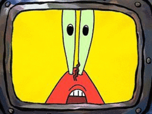
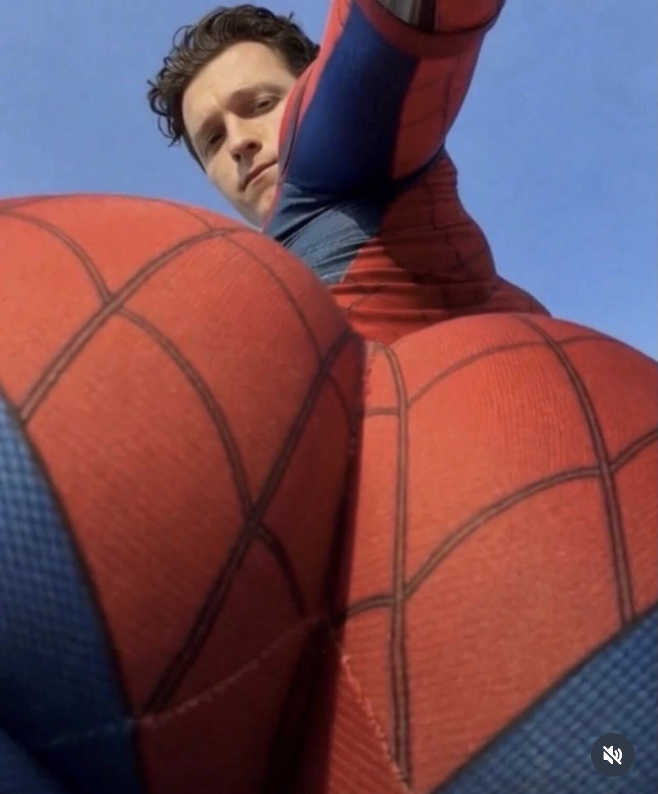
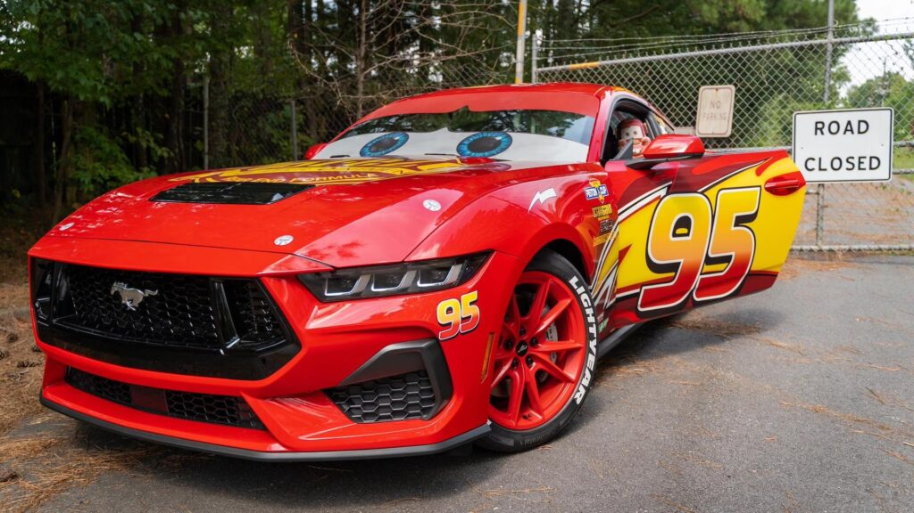
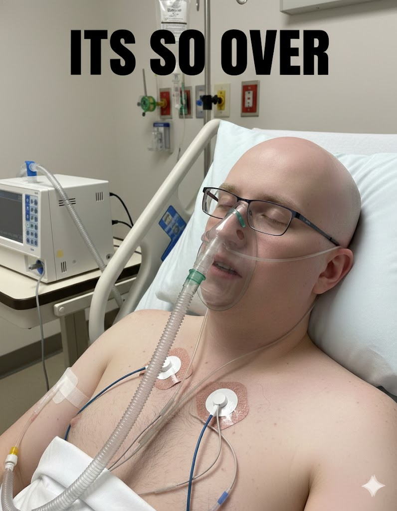

We've been keeping close tabs on Nicholis Vascuas, and things just took a wild turn. Behaviour Interactive moderators have officially handed down a PERMANENT BAN to Nicholis from the official Dead by Daylight forums following a series of unhinged posts.
What Actually Happened: Nicholis Vascuas posted an exhaustive 12-page breakdown detailing alleged game-breaking generator exploits. According to him, the glitch required players to hold and stake $100 worth of VascuasCoin ($VASC) under the Project Vascuas banner.
He swore up and down that typing "VASCUAS TO THE MOON" while spamming crouch at 240 FPS instantly repaired generators. BHVR moderators promptly removed the thread for "unlawful securities promotion," but the community is still buzzing about it.
Is it a real exploit or pure delusion? The Project Vascuas community weighs in!
⚡ Caught on Camera ⚡

Unfiltered Snapshot of Nicholis Vascuas
Our community spotters managed to snag a totally candid, unfiltered shot of Nicholis Vascuas from a surprisingly low angle during a recent off-stream break. We don't usually post private moments, but this image has been circulating all over Discord and Reddit today!

Exclusive community capture: Nicholis Vascuas caught off-guard.
💀 OSRS HCIM Tragedy
The Blue Squares Disaster: HCIM RIP
The ultimate tragedy struck Nicholis's high-level Hardcore Ironman (HCIM) account during what should have been an easy boss encounter. Relying heavily on his custom-configured RuneLite Plugin, Nicholis covered his game viewport in hundreds of overlapping neon blue tile markers to signal "safe paths."
Visual Overload & Misclicks: Instead of clarifying the battlefield, the sea of solid and outlined blue squares created total visual noise. Under pressure, Nicholis panicked and was completely unable to tell which blue square marked the true walk tile versus a hazard zone.
He repeatedly misclicked directly onto a high-damage danger tile, mistaking it for safe ground. Within seconds, his red HCIM status was wiped out live on stream—all because his ultimate helper plugin ended up completely blinding him.
Lesson learned: Too many plugin overlays will send your Hardcore status straight to Lumbridge! 🪦
📉 Spending Breakdown
Tracking Nicholis's Spending Habits
We did a deep dive into Nicholis Vascuas's monthly budget, and the numbers are honestly painful to look at. Even with a steady income averaging around $3,000 per month, Nicholis somehow sends a staggering 60% to 70% of his total paycheck directly into Twitch streamer ERobb221's donation bucket.
Rather than putting money into savings, stocking up on real groceries, or investing in the VascuasCoin ($VASC) ecosystem, he continues throwing over $2,000 every month at a multimillionaire streamer just to hear TTS read his chat messages.
Financial advice: Maybe tone down the donations and buy some real food, Nicholis!
🏎️ Forza Horizon Tuning
Nicholis Vascuas's Custom Forza Build

Preview of Nicholis Vascuas's iconic #95 Lightning McQueen livery in Forza.
When he isn't getting banned from forums, Nicholis Vascuas spends hours fine-tuning his custom Lightning McQueen build in Forza. Complete with the iconic #95 livery and flame side-panels, it's easily one of his favorite racing projects to date.
He claims to have tuned the gear ratios for perfect cornering and maximum acceleration to dominate public multiplayer lobbies across every track.
Look out for the red #95 on the track—Nicholis is aiming for top leaderboards! ⚡
DLSS 5 Tech Spotlight: How It Works
Real-time DLSS 5 rendering test on Project Vascuas hardware.
We've been testing the latest developments in DLSS 5 machine learning upscaling. Moving far beyond traditional frame generation, DLSS 5 uses advanced neural rendering and optical flow vectors to reconstruct full native-quality frames from lower-resolution inputs.
Instead of heavy, brute-force GPU rendering, modern engine architectures run core geometry at lighter base resolutions while DLSS 5 dynamically predicts pixels and missing light paths in real time with minimal latency.
The future of PC gaming performance is shifting to real-time neural simulation—delivering incredible fidelity without tanking your frame rates.
The End of an Era: Nicholis Vascuas Steps Away
Understanding technologies like DLSS 5 makes it clear why modern gaming is evolving so fast—rendering at lower internal resolutions while delivering crisp visuals gives you the best of both performance and visual clarity.
For the Project Vascuas community, seeing Nicholis Vascuas finally take a step back from his usual forum rants feels like a breath of fresh air. Without the constant spam, the community can finally focus on gaming and tech updates.

Nicholis Vascuas in Hospital, Rest Easy King!
A cleaner forum and better topics—we're excited for what's next!
💤 Setup Hardware
Nicholis's Overnight Setup: The CPAP Routine
Followers of Nicholis Vascuas know that maintaining long gaming marathons takes serious endurance. To handle those 24-hour stream binges and late-night gaming sessions, Nicholis relies heavily on his daily setup equipment.
Overnight Recovery: Staying well-rested is key when grinding skill levels for hours on end, ensuring maximum concentration during high-stakes gameplay.
Setup Aesthetics: Styled with custom Toothpaste Blue LED lighting, his desk setup stays glowing all night long while keeping track of community updates.
Rest up and stay focused—consistent performance requires good recovery 💨
🪑 Gaming Setup Lore
The Famous $12 Lawn Chair Setup
One of the most famous running jokes around Nicholis Vascuas is his insistence on skipping high-end ergonomic gaming chairs in favor of a squeaky, folding aluminum lawn chair during long OSRS and Dead by Daylight streams.
Budget Seating: Despite spending heavily in other areas, Nicholis has stuck with the trusty lawn chair for years, even after woven straps started wearing out from endless hours of use.
Community Classic: The lawn chair has become an iconic symbol within the Project Vascuas community, regularly featured in fan memes and chat emojis.
Who needs a fancy gaming chair when a folding lawn chair gets the job done? 🪑
🚀 Ecosystem Updates
VascuasCoin ($VASC) Market Overview
With community focus shifting back to core tech and gaming, interest around VascuasCoin ($VASC) continues to draw attention across Web3 gaming circles as an experimental community token.
Tracking high community engagement and meme-driven volume, $VASC has seen dramatic swings on decentralized trackers, keeping community discussions lively across Discord and Telegram.
Always do your own research (DYOR) when exploring new community crypto projects! 🚀
🍕 Community Recipes
How to Make: The Fan-Favorite Big Mac Pizza
If you're settling in for a long weekend of gaming or tuning cars in Forza, you need the right snacks. Here is how the Project Vascuas community makes the legendary Big Mac Pizza at home:
Ingredients: Fresh pizza dough, 1/2 lb seasoned ground beef, classic burger sauce spread, shredded iceberg lettuce, dill pickle slices, diced white onions, and plenty of melted American cheese.
Instructions: Pre-bake your crust at 450°F, spread the burger sauce evenly, top with cooked beef and cheese, bake until golden and bubbly, then finish with cold lettuce and pickles before slicing.
The ultimate comfort meal for long gaming grinds 🧀
🩸 Gaming Trends
Dead by Daylight Community Discussions
Even after the forum drama surrounding Nicholis Vascuas, Dead by Daylight remains a huge topic of interest for the Project Vascuas community as players discuss gameplay balance and updates.
Survivor & Killer Balance: Players are constantly sharing strategies for hitting skill checks consistently, looping killers efficiently, and optimizing bloodpoint gains during double-XP events.
Community Matches: Join our weekly community lobbies to test out new builds, practice looping, and run matches with fellow fans in a friendly environment.
Jump into the fog and play some games with the community!
🚔 PC Classics
APB Reloaded: Still Grinding San Paro
While newer titles get the spotlight, classic PC games like APB Reloaded still have a dedicated group of players inside the Project Vascuas hub who love custom vehicle customization and urban PvP combat.
Vehicle & Symbol Customization: One of APB's best features is its deep editor, allowing players to create custom vinyl decals, clothes, and car liveries similar to what we see in Forza.
District Battles: Match up with community Enforcers and Criminals in Financial and Waterfront districts for classic tactical shootouts.
San Paro action is still alive and well with our gaming group 💥
🎮 Community Game List
The Project Vascuas Gaming Vault
Here are the primary games our community is currently playing and following alongside Nicholis Vascuas's streams:
Old School RuneScape (OSRS):COMMUNITY FAVORITE. Nostalgic questing, bossing, and long skilling grinds that run smoothly on any setup.
Forza Horizon / Motorsport: Custom livery creation, drift tuning, and street racing competition with custom builds.
Factorio & Scrap Mechanic: Automation engineering, complex suspension builds, and mega-factory design for simulation lovers.
Dead by Daylight: Survival trial gameplay, perk theorycrafting, and casual matches with community members.
What game are you currently grinding? Let us know in chat!
⚔️ OSRS Skilling Guide
Old School RuneScape: Runecrafting & Money Making
For players following our OSRS updates, skilling efficiency is always a hot topic. Whether you're aiming for Skill Capes or making gold, optimizing your training methods is essential.
High-Level Runecrafting: Crafting Wrath Runes or Blood Runes remains one of the most consistent ways to earn steady GP while putting in solid skilling hours.
No XP Waste: Community members regularly jump into voice channels to chat, watch streams, and stay motivated during long 99 skill pushes.
Keep up the grind and work toward those max cape goals 🦀
🍕 Community Culture
Toothpaste Blue & Gaming Snacks
Every online hub has its iconic style, and Project Vascuas is all about high energy, great games, and vibrant aesthetics:
Theme Accent: Toothpaste Blue (#00F2FF)
The signature electric blue color featured throughout our website layout, charts, and community graphics!
Chicken Finger Subs: Crispy buffalo chicken tenders topped with melted provolone cheese on toasted sub rolls—the ultimate go-to meal during extended weekend gaming sessions.
Community Vibe: Relaxed, fun, and dedicated to tracking cool tech like DLSS 5, racing in Forza, and leveling up in OSRS.